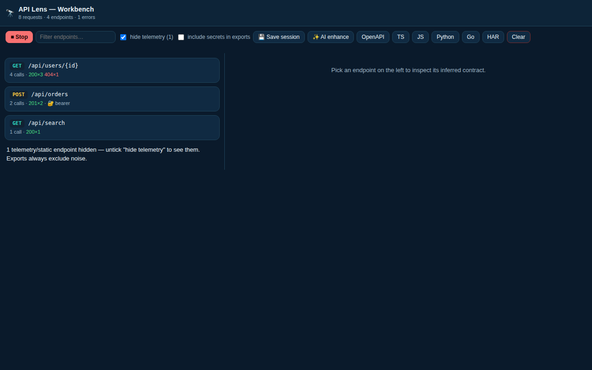
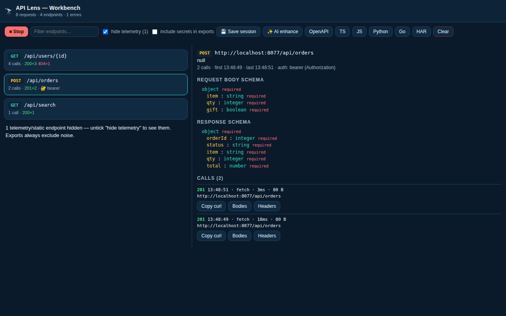

API Lens
Reverse API Engineer · Developer Tools
Record a site's API calls, group them into endpoints, and export OpenAPI plus typed clients in TypeScript, JavaScript, Python and Go.
Live on the Chrome Web Store · v1.1.1 update in review
Get API Lens on the Chrome Web Store
Pro $12/mo planned
What it does
- Per-tab API capture. Record the network calls a site makes while you use it, scoped to the tab you're working in.
- Templated endpoints. Raw calls are grouped into clean, templated endpoints with inferred request and response schemas.
- Auth detection. Detected authentication patterns are surfaced, so you know how the API expects to be called.
- OpenAPI 3.1 export. Generate a spec you can drop into your existing tooling.
- Typed client exports. Ready-to-use clients in TypeScript, JavaScript, Python and Go — plus HAR export.
- Secrets redacted by default. Captured credentials are redacted unless you explicitly choose to include them.
Screenshots


Privacy
Captures stay on the device. Secrets are redacted unless the user opts in to including them in an export.